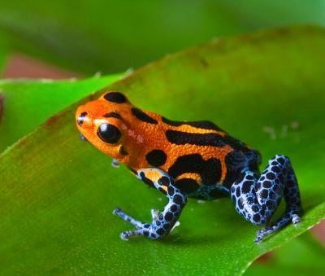
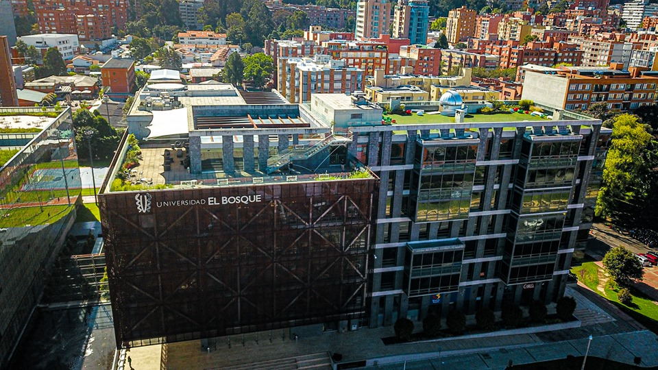
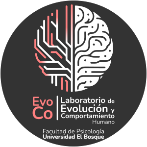
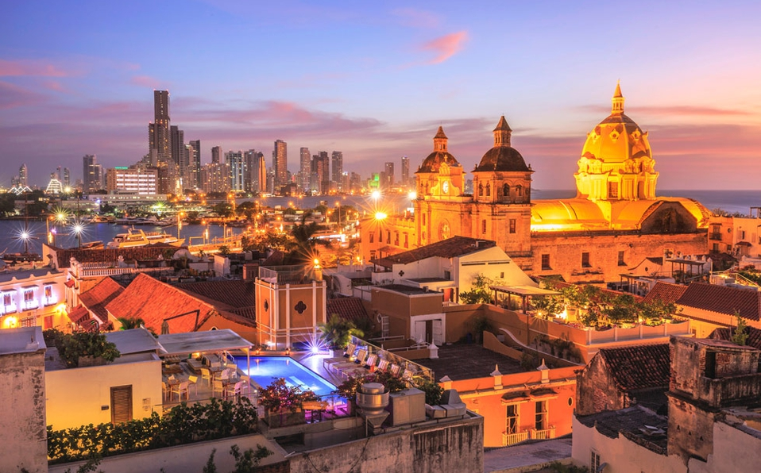
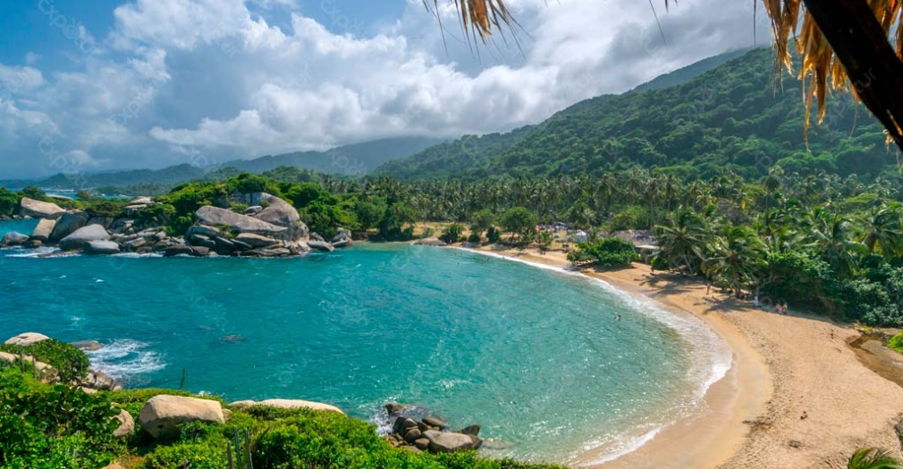
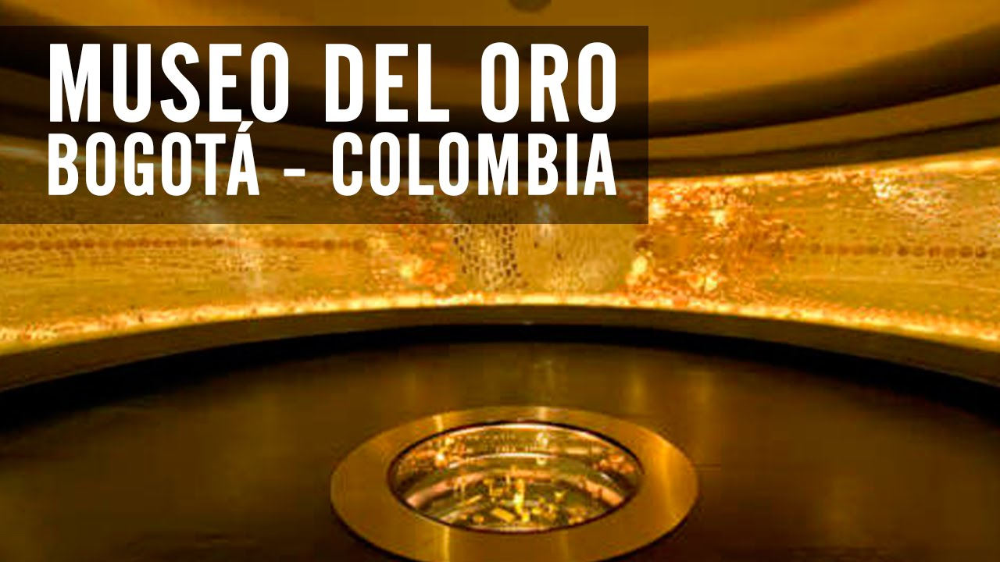
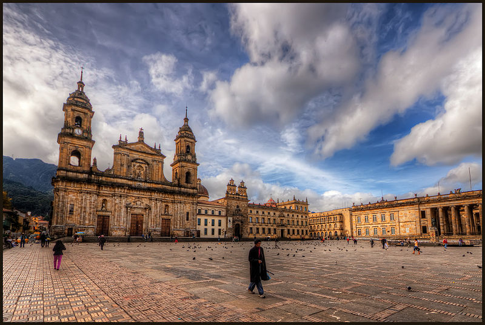
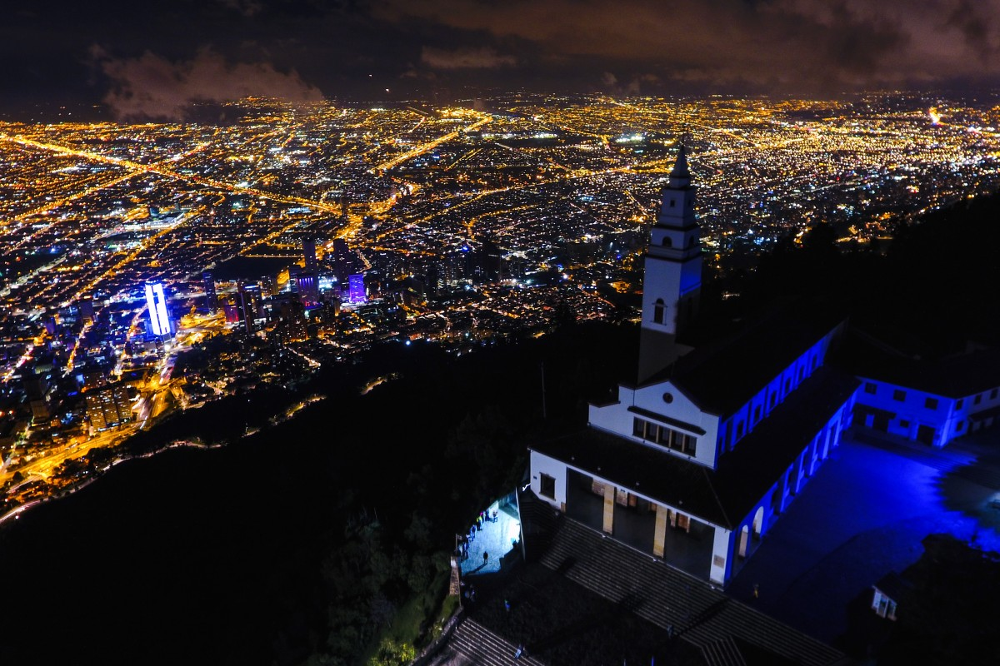

Bogotá, Colombia
ISHE Summer Institute 2027
Colombia is an incredibly diverse country
From tropical beaches to Andean peaks, from the Amazon rainforest to Caribbean islands, all within one country.
Geography
Six very different natural regions
- Caribbean Region
- Pacific Region
- Andean Region (incl. Bogotá)
- Orinoquía Region
- Amazon Region
- Insular Region
One of the most biodiverse countries on Earth
Most biodiverse per km²: more species relative to its size than any other country · Explore the National Parks ↗
Biodiversity stats

51,330 species
🥇 First in
Birds · Orchids
🥈 Second in
Plants · Amphibians · Butterflies · Freshwater fish
🥉 Third in
Palms · Reptiles
4th in
Mammals
Huge cultural diversity
A different mix of Native American, European, and African ancestry in each region.
Cultural diversity: music as an example
Colombia is known as “The Land of a Thousand Rhythms” (in fact it has over 1,025 folkloric rhythms).
Caribbean
· 🎵 Totó La Momposina — El Pescador (traditional)
· 🎵 Systema Solar — Yo Voy Ganao (modern)
Pacific
· 🎵 Herencia de Timbiquí — Amanece (traditional)
· 🎵 ChocQuibTown — De Donde Vengo Yo (modern)
Andean
· 🎵 Fulgencio García — La gata golosa (traditional)
· 🎵 Monsieur Periné — Lloré (modern)
· 🎵 Aterciopelados — Rompecabezas (modern)
Orinoquía
· 🎵 Cholo Valderrama — Llanero Si Soy Llanero (traditional)
Amazon
· 🎵 Indio Cuper — Tonada Amazonica (traditional)
Insular
· 🎵 Coral Group — Coconut Woman (traditional)
A taste — click to play
Traditional · Caribbean
Totó La Momposina — El Pescador
Modern · Andean
Monsieur Periné — Lloré
All regional examples linked in the previous slide
Safety: the honest picture
- Crime has fallen dramatically since the 1990s; tourism grew 34% between 2019 and 2023
- US State Dept issues a Level 3 advisory, but this covers the entire country, including remote border/jungle zones you would never visit
- The flagged high-risk areas (Venezuelan border, Norte de Santander, parts of Cauca) are not on any conference itinerary
- Like any big city, Bogotá has neighbourhoods to avoid, but the conference venue area (Chicó Norte) is one of the city’s safest and best-patrolled zones
“Every travel advisory distinguishes between tourist zones and border/rural conflict zones. Major tourist destinations like Bogotá, Cartagena, and Tayrona are not in the restricted zones.”
Safety: the conference itinerary
Our specific destinations
🏙️
Bogotá — Chicó Norte
One of the safest residential and commercial areas in the city. Well-lit, walkable, full of restaurants and hotels. Used daily by locals and expats alike.
🏰
Cartagena
The walled old city is one of the most visited and safest tourist zones in South America. Standard urban precautions apply.
🌿
Tayrona National Park
A world-class natural reserve. Note it has scheduled bi-annual closures (check 2027 dates). Reopened March 2026 after a temporary extended closure; situation has normalised.
Further reading: Is Colombia safe in 2026? — The Good Traveler Colombia · Colombia safety overview — Impulse Travel · Colombia safety stats — Travel Noire
Bogotá
Colombia’s capital and largest city, founded in 1538.
- Population: 7M+ (10M+ metro area)
- Region: Andean
- Elevation: 2,640 m (8,660 ft)
- Temperature: avg 14.5 °C (58 °F),
ranging 6–19 °C (43–66 °F)
Bogotá: well connected
🖱️ Interactive map — hover over a point to see city and flight details · click, drag, and zoom to explore
Bogotá
103 destinations in 30 countries, non-stop from El Dorado (BOG).
44 domestic routes plus direct connections across Europe, the Americas, and the Middle East.
Source: FlightConnections, 2026
Bogotá: no visa required for most attendees
🌎 Latin America
No visa required for most countries: Bogotá is a natural hub for regional attendees
🇪🇺 European Union / Schengen
No visa required · stamp on arrival
🇬🇧 🇺🇸 🇨🇦 🇦🇺 UK · USA · Canada · Australia
No visa required · stamp on arrival
Colombia’s open visa policy covers the vast majority of potential ISHE attendees from Latin America, North America, and Europe.
Up to 90 days per stay (extendable to 180 days/year). No advance paperwork required.
Bogotá: excellent value
Estimated daily costs — mid-range conference attendee (USD)
🇨🇴 Bogotá
🏨 Hotel (3–4★): $80–120 🍽️ Restaurant meal: $12–20 🚕 City transport: $3–8
~$95–148 / day
🇧🇷 São Paulo / Brazil
🏨 Hotel (3–4★): $150–220 🍽️ Restaurant meal: $20–35 🚕 City transport: $5–12
~$175–267 / day
🇨🇱 Santiago / Chile
🏨 Hotel (3–4★): $130–190 🍽️ Restaurant meal: $18–30 🚕 City transport: $4–10
~$152–230 / day
Approximate 2025–2026 rates · Sources: Booking.com · Numbeo · local listings
Bogotá: what the city offers
- 58 museums, including the world-class Gold Museum
- Wide range of hotels, hostels, and Airbnb
- Vibrant cultural calendar year-round
🍽️ World-class gastronomy
Home to El Chato — #1 restaurant in Latin America (World’s 50 Best). Hundreds of options at every price point.
“Bogotá, Colombia’s banging capital”
Hosts
The University and the Lab
Universidad El Bosque


- ~11,000 students
- 31 undergraduate programmes
- 90 postgraduate programmes
- Recognised by the Colombian government as a High Quality institution
The Human Behaviour and Evolution Lab (EvoCo)
The EvoCo Lab is one of the few research centres in South America studying human behaviour from an evolutionary perspective.
Research covers a wide range, from mate choice and face and voice perception to hormone research, combining experimental work with computational methods.
EvoCo is part of the Cognitive Processes and Education Research Group, recognised at the highest level by the Colombian government.

Plan
Location, social activities, and pre/post-conference trip
Location: Chicó Norte
In a hotel in the Chicó Norte area:
- One of the nicest and safest areas in the city
- Lots of restaurants, cafés, bars, and shops within walking distance
- Excellent accommodation options at various price points
- One session (perhaps an afternoon) at the University
Banquet on the last evening at a great Bogotá restaurant — e.g. Andrés DC ↗
Pre/post-conference trip: Caribbean Coast (4–5 days)

First stop: Cartagena de Indias
A UNESCO World Heritage colonial city on the Caribbean — stunning architecture, warm weather, and superb food.
Pre/post-conference trip: Tayrona National Park

Then: Tayrona National Park
One of Colombia’s most spectacular natural reserves — pristine beaches, coral reefs, and jungle trails descending to the Caribbean Sea.
Bogotá, Colombia
ISHE Summer Institute 2027
ISHE Summer Institute 2027 · Bogotá, Colombia
Social activities: city centre tour



One afternoon for a guided trip to the historic city centre: